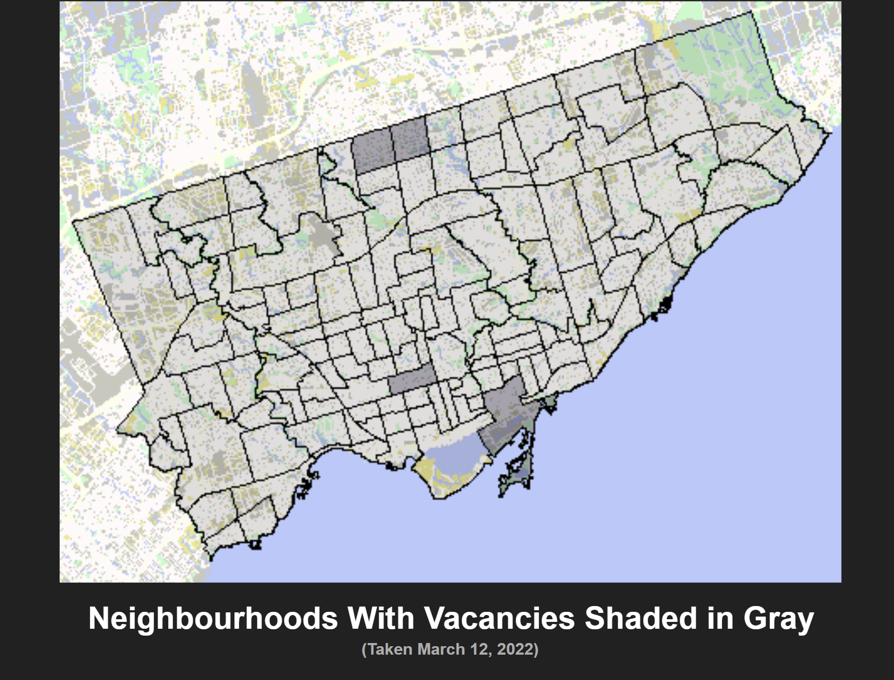

One of the time honoured Frosh Week traditions is Hard Hat decoration, which usually consists of painting it, putting stickers on it, etc.
My Hard Hat decoration, in collaboration with Nanik was to add a giant screen on the front,
onto which people can leave messages.
Users do this by scanning the QR code taped on the sides, which leads them to a Google Form where they can type in whatever they want.
The input to the form then gets sent to be displayed on a website, which is being displayed by the Hard Hat's screen.
Nanik did all the hardware (setting up the screen, hiding the Raspberry Pi inside a cleverly 3D printed box) and I did the software, which consisted of
setting up a Google Script to update a Github Pages site every time someone filled out the form.
Skills learned: Google scripts, Github websites, why maybe it's not a good idea to let strangers decide what to write on your forehead (which you can't see by the way, so a lot of stuff goes unnoticed until people start pointing and laughing at you)
Nanik handled the hardware (figuring out the physicla design of the accordion, soldering most of the keys, adding the light-senstivie resistor inside the accordion s/t/ it would only play when expanded and contracted). My job was to take the physical accordion, and how to make it such that the STM32 was able to play the right notes when the right key was pressed.
Skills learned: soldering, embedded software design (e.g., fundementals of how DAC/ADCs work, interrupts), how to play the accordion
Emergency Shelter MapThe goal of ECE297 (Software Design) is to create a program to visualize geographical data from OpenStreetMap using C++ and the GTK library (so a map.) In addition to following best graphic design practices and optimizing the map for fast rendering speed, I also took data from the City of Toronto's emergency shelter list, and displayed all the locations of emergency shelters in Toronto with their current occupancy.
The project is typically done in groups of three, but due to unfortunate circumstances, the other two members of my group were unable to complete the project, so the majority of the map was developed by me.

Skills learned: data structures, software design, how to speed up programs, the sad state of Toronto's emergency shelter system